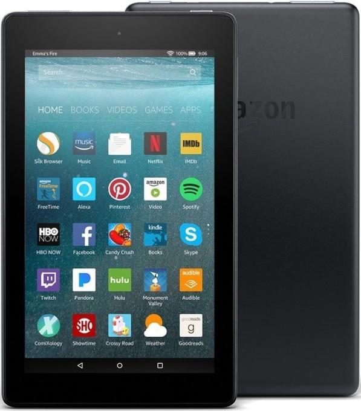

Amazon Fire 7 2017 (amazon-austin)
Jump to navigation
Jump to search
|  | |
| Manufacturer | Amazon |
|---|---|
| Name | Fire 7 (2017) |
| Codename | amazon-austin |
| Released | 2017 |
| Category | testing |
| Original software | Android |
| Original version | Lollipop (Fire OS 5) |
| Hardware | |
| Chipset | MediaTek MT8127 |
| CPU | 4x 1.3 GHz Cortex-A7 |
| GPU | Mali-450 MP4 |
| Display | 1024 x 600 IPS |
| Storage | 8 GB, up to 256 GB microSD card |
| Memory | 1 GB |
| Architecture | armv7 |
{kind=link}
| USB Networking |
Works
|
|---|---|
| Flashing |
Works
|
| Touchscreen |
Works
|
| Display |
Works
|
| WiFi |
Partial
|
| FDE | |
| Mainline |
Broken
|
| Battery |
Works
|
| 3D Acceleration | |
| Audio | |
| Bluetooth |
Partial
|
| Camera | |
| GPS | |
| Mobile data | |
| SMS | |
| Calls | |
| USB OTG |
Works
|
| NFC | |
| Accelerometer | |
|---|---|
| Magnetometer | |
| Ambient Light | |
| Proximity | |
| Hall Effect | |
| Barometer | |
| Power Sensor | |
| Camera Flash | |
|---|---|
| Keyboard | |
| Touchpad | |
| USB-A | |
| HDMI/DP | |
| Ir TX | |
| Ir RX | |
| Stylus | |
| Haptics | |
| Ethernet | |
| FOSS bootloader | |
Users owning this device
Unlock the bootloader
The bootloader can now be unlocked through a new hardware method: https://forum.xda-developers.com/amazon-fire/development/unlock-fire-t3899860
How to enter recovery mode
Press and hold Power + Volume Up
Installation
This assumes that you already have Linux distro installed and the bootloader on the tablet is unlocked. Don't worry if it looks complicated. If you are unsure of something ask on the postmarketos matrix or leave a comment for help.
- Install pmbootstrap as stated in the Installation_guide, does not matter which options or device you pick.
- Once that is done download and drag the two folders in the git repo into "/home/YOURUSER/.local/var/pmbootstrap/cache_git/pmaports/device/testing/" also displayed as "~/.local/var/pmbootstrap/cache_git/pmaports/device/testing".
- Run pmbootstrap init and select amazon as manufacture and austin as the device, mate, lxde, xfde, are confirmed working.
- Run pmbootstrap install
- Boot into twrp and wipe all partitions including data
- Boot into the hacked bootloader from the twrp options
- Run
pmbootstrap flasher flash_rootfs --partition userdata(system partion is too small to flash!) and once it is done flashing runpmbootstrap flasher flash_kernel - Unplug the device, wait 10 seconds and then hold the power button. Once it is powered on YOU MUST boot it into twrp at least once as it needs to restore the AMONET exploit, until you do that the device will not boot.
Amonet
Amonet is an lk exploit used to boot an unsigned kernel. Sources of amonet are available here: https://github.com/xyzz/amonet/tree/mustang. This exploit is installed by a bootrom exploit. But probably some 2nd stage bootloader is a good idea.
Device problems
- Mainline will highly unlikely be ever supported.
- This device use exploit due to locked bootloader. See #Amonet.
- This device's bl is not very good for running linux, due to it appends much of bad cmdline params, and some things in device tree.
See also
- pmaports!3251 Initial merge request
- https://forum.xda-developers.com/t/postmarketos-for-amazon-fire-7-hd-2017-austin.4315717/ Xda-Developers forum topic